Introduction
In this tutorial, we will will:
- Load RNA and ATAC-seq data from a 10x multiome experiment
- Filter for high-quality cells
- RNA PCA + UMAP dimensionality reduction
- Unbiased clustering
- Visualize marker genes to annotate clusters
- Call ATAC-seq peaks
- ATAC PCA + UMAP dimensionality reduction
- Visualize transcription factor footprints
- Plot accessibility genome tracks
This tutorial is a work-in-progress, inspired by Seurat’s PBMC 3k clustering tutorial.
Setup
Install packages
Install analysis-specific packages
Install cran dependencies:
- irlba (PCA)
- uwot (UMAP)
- RcppHNSW (clustering)
- igraph (clustering)
- BiocManager (access bioconductor packages)
- ggplot2 version <=3.3.5 or >=3.4.1 (hexbin was broken for versions 3.3.6-3.4.0)
install.packages(c("irlba", "uwot", "RcppHNSW", "igraph", "BiocManager", "remotes", "ggplot2"))Bioconductor dependencies:
- BSgenome.Hsapiens.UCSC.hg38 (TF motif scanning)
BiocManager::install("BSgenome.Hsapiens.UCSC.hg38")Github:
- motifmatchr (TF motif scanning)
- chromVARmotifs (TF motif database)
remotes::install_github(c("GreenleafLab/motifmatchr", "GreenleafLab/chromVARmotifs"), repos=BiocManager::repositories())Install BPCells
remotes::install_github(c("bnprks/BPCells/r"))Set up analysis folder
library(BPCells)
suppressPackageStartupMessages({
library(dplyr)
})
# Substitute your preferred working directory for data_dir
data_dir <- file.path(tempdir(), "pbmc-3k")
dir.create(data_dir, recursive = TRUE, showWarnings = FALSE)
setwd(data_dir)Download data
Next, we download this 3k PBMC dataset from 10x Genomics into a temporary directory.
The files are about 500MB large when combined
url_base <- "https://cf.10xgenomics.com/samples/cell-arc/2.0.0/pbmc_granulocyte_sorted_3k/"
rna_raw_url <- paste0(url_base, "pbmc_granulocyte_sorted_3k_raw_feature_bc_matrix.h5")
atac_raw_url <- paste0(url_base, "pbmc_granulocyte_sorted_3k_atac_fragments.tsv.gz")
# Increase download timeout from 60 seconds to 5 minutes
options(timeout=300)
# Only download files if we haven't downloaded already
if (!file.exists("pbmc_3k_10x.h5")) {
download.file(rna_raw_url, "pbmc_3k_10x.h5", mode="wb")
}
if (!file.exists("pbmc_3k_10x.fragments.tsv.gz")) {
download.file(atac_raw_url, "pbmc_3k_10x.fragments.tsv.gz", mode="wb")
}Data Loading
First, we convert the raw data inputs from a 10x format into a bitpacked compressed format stored as binary files on disk.
BPCells can still read the data if we don’t convert the format, but certain ATAC-seq functionality will run much faster on the converted data.
Convert the RNA matrix:
# Check if we already ran import
if (!file.exists("pbmc_3k_rna_raw")) {
mat_raw <- open_matrix_10x_hdf5("pbmc_3k_10x.h5", feature_type="Gene Expression") %>%
write_matrix_dir("pbmc_3k_rna_raw")
} else {
mat_raw <- open_matrix_dir("pbmc_3k_rna_raw")
}
mat_raw## 36601 x 650165 IterableMatrix object with class MatrixDir
##
## Row names: ENSG00000243485, ENSG00000237613 ... ENSG00000277196
## Col names: AAACAGCCAAACAACA-1, AAACAGCCAAACATAG-1 ... TTTGTTGGTTTGTTGC-1
##
## Data type: uint32_t
## Storage order: column major
##
## Queued Operations:
## 1. Load compressed matrix from directory /home/runner/work/BPCells/BPCells/r/vignettes/pbmc-3k-data/pbmc_3k_rna_rawConvert the ATAC-seq fragments
# Check if we already ran import
if (!file.exists("pbmc_3k_frags")) {
frags_raw <- open_fragments_10x("pbmc_3k_10x.fragments.tsv.gz") %>%
write_fragments_dir("pbmc_3k_frags")
} else {
frags_raw <- open_fragments_dir("pbmc_3k_frags")
}
frags_raw## IterableFragments object of class "FragmentsDir"
##
## Cells: 462264 cells with names TTTAGCAAGGTAGCTT-1, GCCTTTGGTTGGTTCT-1 ... ATCACCCTCCATAATG-1
## Chromosomes: 39 chromosomes with names chr1, chr10 ... KI270713.1
##
## Queued Operations:
## 1. Read compressed fragments from directory /home/runner/work/BPCells/BPCells/r/vignettes/pbmc-3k-data/pbmc_3k_fragsHow much storage space did we save with bitpacking compression?
ATAC storage space dropped from 468 MB for the gzipped 10x file to 209 MB for the bitpacked storage.
RNA storage space dropped from 51.2 MB for the 10x hdf5 file with gzip compression to 33.5 MB using bitpacking compression. In this case, the storage space is a little misleading since 39% of the bitpacked storage is spent on the gene + cell names. In this case both 10x compressed hdf5 and bitpacking compression are 4-6x smaller than an uncompressed sparse matrix format such as AnnData h5ad’s default.
Aside from compact storage, bitpacking compression also enables very fast read speeds which is useful for downstream calculations.Filter for high-quality cells
RNA-seq filtering
We use a simple minimum read threshold for RNA-seq quality. The cutoff we choose is just below the first knee of our log-log plot of reads vs. barcode rank, which separates cells from empty droplets.
reads_per_cell <- Matrix::colSums(mat_raw)
plot_read_count_knee(reads_per_cell, cutoff = 1e3)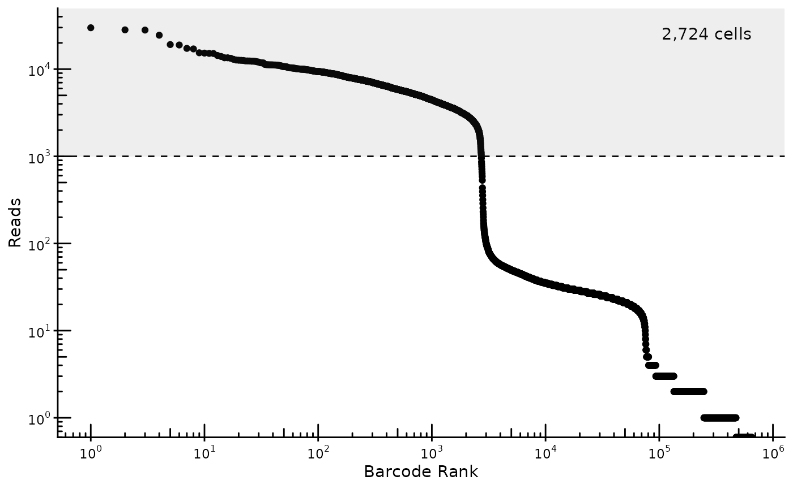
ATAC-seq filtering
Download reference annotations
We fetch reference information necessary to calculate quality-control statistics. By default, this fetches the latest annotations for hg38.
Since fetching the references involves downloading gtf and bed files, we provide the name of a directory to save the files in. This also allows us to skip re-downloading the same files next time.
genes <- read_gencode_transcripts(
"./references",
release="42",
transcript_choice="MANE_Select",
annotation_set = "basic",
features="transcript" # Make sure to set this so we don't get exons as well
)
head(genes)## # A tibble: 6 × 13
## chr source feature start end score strand frame gene_id gene_type
## <chr> <chr> <chr> <dbl> <int> <chr> <chr> <chr> <chr> <chr>
## 1 chr1 HAVANA transcript 65418 71585 . + . ENSG000001… protein_…
## 2 chr1 HAVANA transcript 450739 451678 . - . ENSG000002… protein_…
## 3 chr1 HAVANA transcript 685715 686654 . - . ENSG000002… protein_…
## 4 chr1 HAVANA transcript 923922 944574 . + . ENSG000001… protein_…
## 5 chr1 HAVANA transcript 944202 959256 . - . ENSG000001… protein_…
## 6 chr1 HAVANA transcript 960583 965719 . + . ENSG000001… protein_…
## # ℹ 3 more variables: gene_name <chr>, transcript_id <chr>, MANE_Select <lgl>
blacklist <- read_encode_blacklist("./references", genome="hg38")
head(blacklist)## # A tibble: 6 × 4
## chr start end reason
## <chr> <dbl> <dbl> <chr>
## 1 chr10 0 45700 Low Mappability
## 2 chr10 38481300 38596500 High Signal Region
## 3 chr10 38782600 38967900 High Signal Region
## 4 chr10 39901300 41712900 High Signal Region
## 5 chr10 41838900 42107300 High Signal Region
## 6 chr10 42279400 42322500 High Signal Region
chrom_sizes <- read_ucsc_chrom_sizes("./references", genome="hg38")
head(chrom_sizes)## # A tibble: 6 × 3
## chr start end
## <chr> <dbl> <int>
## 1 chr1 0 248956422
## 2 chr2 0 242193529
## 3 chr3 0 198295559
## 4 chr4 0 190214555
## 5 chr5 0 181538259
## 6 chr6 0 170805979Calculate ATAC-seq quality-control metrics
We can calculate several built-in quality control metrics for each barcode, including number of fragments and TSS enrichment. These calculations are fully compatible with ArchR’s methodology for quality control statistics.
## # A tibble: 6 × 10
## cellName TSSEnrichment nFrags subNucleosomal monoNucleosomal multiNucleosomal
## <chr> <dbl> <int> <int> <int> <int>
## 1 TTTAGCAA… 45.1 16363 8069 5588 2706
## 2 GCCTTTGG… 0.198 3 1 2 0
## 3 AGCCGGTT… 30.9 33313 15855 11868 5590
## 4 TGATTAGT… 41.9 11908 6103 3817 1988
## 5 ATTGACTC… 43.9 13075 6932 4141 2002
## 6 CGTTAGGT… 31.5 14874 6833 5405 2636
## # ℹ 4 more variables: ReadsInTSS <dbl>, ReadsFlankingTSS <dbl>,
## # ReadsInPromoter <dbl>, ReadsInBlacklist <dbl>One of the key ways to identify high-quality cells in ATAC-seq data is to plot the number of fragments vs. TSS Enrichment. This plot puts empty droplets in the bottom-left quadrant, low-quality/dead cells in the bottom-right quadrant, and high-quality cells in the top-right quadrant. From a flow-cytometry perspective, we use the bottom-left group of empty droplets as a negative control to help set our cutoffs.
plot_tss_scatter(atac_qc, min_frags=1000, min_tss=10)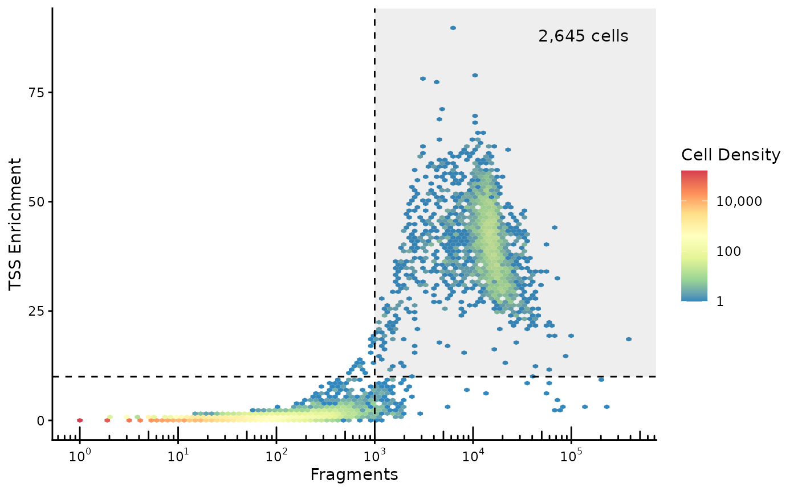
Why is this TSS Enrichment number different from ArchR?
The TSS Enrichment number varies depending on the TSS annotation set used, as a stricter definition of what counts as a TSS will tend to give higher TSS enrichment. BPCells uses the exact same formula as ArchR to calculate TSS enrichment, so if you pass the ArchR TSS set to BPCells you’ll get identical results. However, in this case we’ve used a somewhat more strict definition of TSS by taking just the MANE select transcripts from Gencode.Why are there no cells in the top-left quadrant?
Due to a thresholding that ArchR’s formula applies in the denominator of the TSS Enrichment calculation, low-read cells can’t be assigned a very high TSS Enrichment value.
To plot the TSS enrichment without this thresholding, do the following:
atac_qc %>%
dplyr::mutate(TSSEnrichment=ReadsInTSS/pmax(1,ReadsFlankingTSS) * 200/101) %>%
plot_tss_scatter(min_frags=2000, min_tss=20) +
ggplot2::labs(title="Raw TSS Enrichment")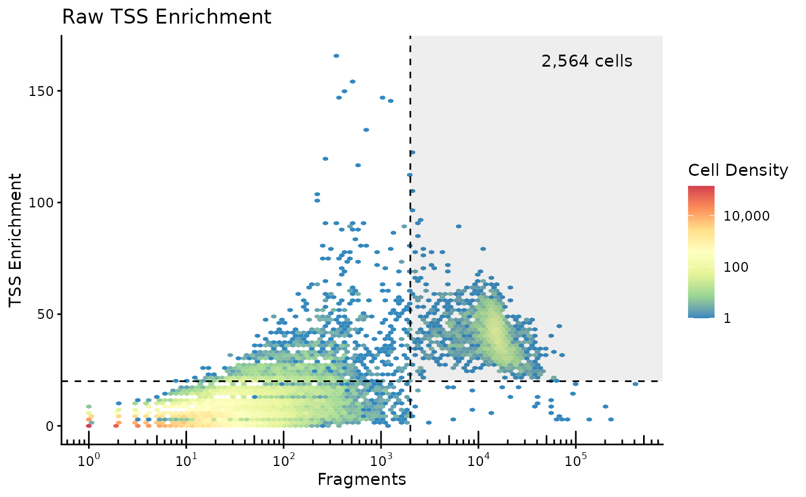
Note that the 200/101 fraction accounts for
ReadsInTSS drawing from 101-bp windows, and
ReadsFlankingTSS drawing from 2x100-bp windows. This results in more
low-read droplets measuring high TSS Enrichment, so we use slightly
adjusted cutoffs.
pmax(1,ReadsFlankingTSS) with
pmax(20,ReadsFlankingTSS) in the above code.
We can also plot some sample-level quality control plots.
On the left, the fragment length distribution shows three broad bumps corresponding to nucleosome spacing (147bp), and smaller wiggles corresponding to DNA winding (11.5bp).
On the right, the TSS enrichment profile shows a strong enrichment of signal at transcription start sites, as well as a small asymmetrical bump downstream of the TSS after the +1 nucleosome.
plot_fragment_length(frags_raw) + plot_tss_profile(frags_raw, genes)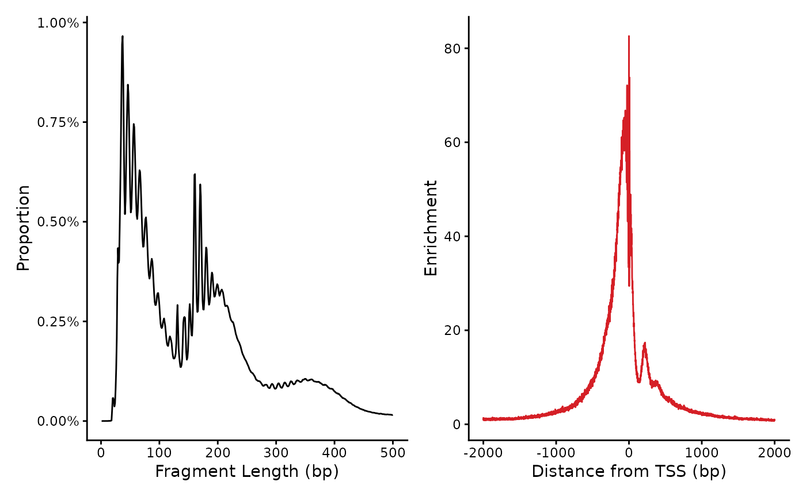
Select high-quality cells
We take cells that pass our minimum RNA reads, minimum ATAC reads, and minimum TSS Enrichment cutoffs.
pass_atac <- atac_qc %>%
dplyr::filter(nFrags > 1000, TSSEnrichment > 10) %>%
dplyr::pull(cellName)
pass_rna <- colnames(mat_raw)[Matrix::colSums(mat_raw) > 1e3]
keeper_cells <- intersect(pass_atac, pass_rna)We subset the RNA and ATAC input data to just the cells passing filter. And for RNA, we subset to genes with at least 3 reads. This subset operation also puts the cells in a matching order which simplifies cross-modality calculations later on.
frags <- frags_raw %>% select_cells(keeper_cells)
keeper_genes <- Matrix::rowSums(mat_raw) > 3
mat <- mat_raw[keeper_genes,keeper_cells]RNA Normalization, PCA and UMAP
Matrix normalization
Here, we walk through the Seurat-style matrix normalization calculations manually, though soon there will be helper functions to simplify the process.
First we log-normalize, roughly equivalent to
Seurat::NormalizeData
# Normalize by reads-per-cell
mat <- multiply_cols(mat, 1/Matrix::colSums(mat))
# Log normalization
mat <- log1p(mat * 10000) # Log normalizationNext we pick out variable genes:
stats <- matrix_stats(mat, row_stats="variance")
# To keep the example small, we'll do a very naive variable gene selection
variable_genes <- order(stats$row_stats["variance",], decreasing=TRUE) %>%
head(1000) %>%
sort()
mat_norm <- mat[variable_genes,]If we look at our normalized matrix object, we can see we have quite a few math operations queued up which are performed on-the-fly as needed.
mat_norm## 1000 x 2600 IterableMatrix object with class TransformLog1p
##
## Row names: ENSG00000078369, ENSG00000116251 ... ENSG00000212907
## Col names: TTTAGCAAGGTAGCTT-1, AGCCGGTTCCGGAACC-1 ... TACTAAGTCCAATAGC-1
##
## Data type: double
## Storage order: column major
##
## Queued Operations:
## 1. Load compressed matrix from directory /home/runner/work/BPCells/BPCells/r/vignettes/pbmc-3k-data/pbmc_3k_rna_raw
## 2. Select rows: 87, 171 ... 36568 and cols: 640783, 89020 ... 504383
## 3. Convert type from uint32_t to double
## 4. Scale by 1e+04
## 5. Scale columns by 0.000221, 0.000118 ... 0.000177
## 6. Transform log1pTo improve performance of the downstream PCA, we save this sparse normalized matrix to a temporary file just prior to normalizations that would make the matrix dense. This saves storage space while preventing us from having to re-calculate the queued operations several-hundred times during the PCA optimization iterations.
In this case, the matrix is quite small so we’ll just store it in
memory. In a larger example we could swap this for
write_matrix_dir(tempfile("mat"))
mat_norm <- mat_norm %>% write_matrix_memory(compress=FALSE)Finally, we perform z-score normalization which makes the matrix dense.
gene_means <- stats$row_stats["mean",variable_genes]
gene_vars <- stats$row_stats["variance", variable_genes]
mat_norm <- (mat_norm - gene_means) / gene_varsPCA and UMAP
PCA can be performed with a standard solver like that in
irlba, though BPCells also provides a C++-level solver
based on the Spectra package which has built-in
parallelization support.
svd <- BPCells::svds(mat_norm, k=50)
# Alternate option: irlba::irlba(mat_norm, nv=50)
pca <- multiply_cols(svd$v, svd$d)
cat(sprintf("PCA dimensions: %s\n", toString(dim(pca))))
pca[1:4,1:3]## PCA dimensions: 2600, 50
## [,1] [,2] [,3]
## [1,] 15.167732 0.8951489 -2.3650024
## [2,] 6.599775 7.2484737 4.4369185
## [3,] 14.621697 -1.1929478 -0.6439663
## [4,] 8.142875 1.0977223 -2.5066235Next we calculate UMAP coordinates
## [,1] [,2]
## [1,] 9.9284977 2.8806480
## [2,] -0.7640393 -11.7900724
## [3,] 9.8782410 3.1049877
## [4,] 7.7622828 0.5004428Clustering
We perform a quick clustering as follows, based on the PCA coordinates.
clusts <- knn_hnsw(pca, ef=500) %>% # Find approximate nearest neighbors
knn_to_snn_graph() %>% # Convert to a SNN graph
cluster_graph_louvain() # Perform graph-based clustering## Clusts length: 2600
## [1] 1 2 1 2 2 3 2 2 4 5
## Levels: 1 2 3 4 5 6 7 8 9 10 11 12And now we can visualize the clusters on a UMAP:
plot_embedding(clusts, umap)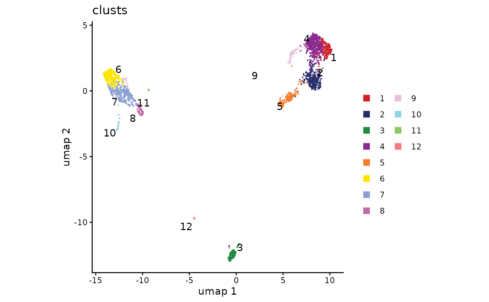
Visualize marker genes
To annotate our clusters with cell types, we can plot several marker genes overlaid onto the UMAP.
plot_embedding(
source = mat,
umap,
features = c("MS4A1", "GNLY", "CD3E",
"CD14", "FCER1A", "FCGR3A",
"LYZ", "CD4","CD8"),
)We observe cluster-specific enrichment of B-cell marker MS4A1, T-cell marker CD3E, and Monocyte marker LYZ. This allows us to make some broad cell type groupings as follows:
cluster_annotations <- c(
"1" = "T",
"2" = "CD8 T",
"3" = "B",
"4" = "T",
"5" = "NK",
"6" = "Mono",
"7" = "Mono",
"8" = "Mono",
"9" = "T",
"10" = "DC",
"11" = "Mono",
"12" = "DC"
)
cell_types <- cluster_annotations[clusts]
plot_embedding(cell_types, umap)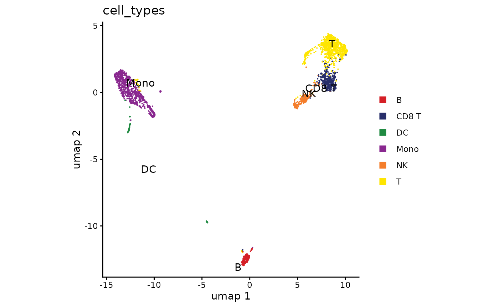
We can further visualize the marker genes for each cluster using a dot plot. As is typical for these situations, some known marker genes are very clear, while others are less specific.
ATAC Normalization, PCA and UMAP
We start with tile-based peak calling, which tests pre-determined overlapping tile positions for significant enrichment of ATAC-seq signal over the genome-wide background in each cell type independently. This is faster than using a traditional peak-caller like MACS, though with the default parameters the peaks will always be 200bp wide and the positioning resolution is approximately +/- 30bp.
frags_filter_blacklist <- frags %>%
select_regions(blacklist, invert_selection = TRUE)
peaks <- call_peaks_tile(frags_filter_blacklist, chrom_sizes, cell_groups=cell_types,
effective_genome_size = 2.8e9)
head(peaks)## # A tibble: 6 × 7
## chr start end group p_val q_val enrichment
## <fct> <int> <int> <chr> <dbl> <dbl> <dbl>
## 1 chr1 16644600 16644800 T 0 0 1017.
## 2 chr19 18281733 18281933 Mono 0 0 518.
## 3 chr17 81860866 81861066 DC 7.87e- 63 1.21e- 55 552.
## 4 chr1 1724333 1724533 Mono 0 0 512.
## 5 chr1 228140000 228140200 NK 2.77e-162 2.14e-155 842.
## 6 chr8 30083133 30083333 CD8 T 4.80e-220 7.41e-213 744.Next we compute a peak matrix counting how many ATAC-seq insertions overlap each peak. We again save it in memory rather than saving it to disk since our dataset is quite small.
Why do we calculate ordered_peaks?
For peak matrix calculation to run efficiently, peaks must be sorted in
order by chromosome and end coordinate. Although
peak_matrix can automatically reorder the peaks
appropriately, we show how to perform the sorting manually for this
example.
top_peaks <- head(peaks, 50000)
top_peaks <- top_peaks[order_ranges(top_peaks, chrNames(frags)),]
peak_mat <- peak_matrix(frags, top_peaks, mode="insertions")Next we calculate the TF-IDF normalization. This formula is the TF-IDF variant from Stuart et al.
mat_lsi <- peak_mat %>%
multiply_cols(1 / Matrix::colSums(peak_mat)) %>%
multiply_rows(1 / Matrix::rowMeans(peak_mat))
mat_lsi <- log1p(10000 * mat_lsi)Looking at this LSI matrix, we can see the power of BPCells performing matrix operations on-the-fly: the LSI normalization is in fact calculated at the same time as the fragment overlap calculations when we read this matrix. We don’t need to store any intermediate matrices during these calculations, and even the peak matrix can be re-calculated on-the-fly based on the fragments object saved to disk.
mat_lsi## 50000 x 2600 IterableMatrix object with class TransformLog1p
##
## Row names: chr1:817200-817400, chr1:827466-827666 ... chrX:155881200-155881400
## Col names: TTTAGCAAGGTAGCTT-1, AGCCGGTTCCGGAACC-1 ... TACTAAGTCCAATAGC-1
##
## Data type: double
## Storage order: row major
##
## Queued Operations:
## 1. Read compressed fragments from directory /home/runner/work/BPCells/BPCells/r/vignettes/pbmc-3k-data/pbmc_3k_frags
## 2. Select 2600 cells by name: TTTAGCAAGGTAGCTT-1, AGCCGGTTCCGGAACC-1 ... TACTAAGTCCAATAGC-1
## 3. Calculate 2600 peaks over 50000 ranges: chr1:817201-817400 ... chrX:155881201-155881400
## 4. Convert type from uint32_t to double
## 5. Scale by 1e+04
## 6. Scale columns by 6.71e-05, 5.17e-05 ... 0.000801
## 7. Scale rows by 11.1, 2.78 ... 3.77
## 8. Transform log1pJust like for the RNA, we save our matrix before running PCA. On a larger dataset, we would save to disk rather than to memory.
mat_lsi <- write_matrix_memory(mat_lsi, compress=FALSE)Finally, we will do a z-score normalization on the LSI matrix then run PCA. This is standard practice for running a PCA, but is not commonly done on ATAC-seq datasets due to the fact that it greatly increases memory usage. In other methods, the 1st PC is highly correlated to the number of reads per cell, and is thrown out as an empirical correction.
Luckily, BPCells can avoid this memory usage so we can just normalize our data and run PCA as usual
# Compute colMean and colVariance in one pass
cell_peak_stats <- matrix_stats(mat_lsi, col_stats="variance")$col_stats
cell_means <- cell_peak_stats["mean",]
cell_vars <- cell_peak_stats["variance",]
mat_lsi_norm <- mat_lsi %>%
add_cols(-cell_means) %>%
multiply_cols(1 / cell_vars)
svd_atac <- BPCells::svds(mat_lsi_norm, k=10)
pca_atac <- multiply_cols(svd_atac$v, svd_atac$d)
pca_atac[1:4,1:4]## [,1] [,2] [,3] [,4]
## [1,] -103.64071 1.553515 2.436148 21.22977
## [2,] -44.75342 -28.737622 -12.681591 -10.01745
## [3,] -90.74857 3.266168 3.627660 12.95109
## [4,] -90.74640 -6.447103 6.853840 -15.76629Next we calculate our UMAP
## [,1] [,2]
## [1,] 6.089028 4.207542
## [2,] -7.985246 -1.984984
## [3,] 11.562254 5.900722
## [4,] 3.042405 2.246846Then we cluster, just like for the RNA
clusts_atac <- knn_hnsw(pca_atac, ef=500) %>% # Find approximate nearest neighbors
knn_to_snn_graph() %>% # Convert to a SNN graph
cluster_graph_louvain() # Perform graph-based clusteringAnd we can plot our ATAC-seq embedding with ATAC-derived clusters, and easily compare that to the RNA-derived clusters from earlier.
plot_embedding(clusts_atac, umap_atac, colors_discrete = discrete_palette("ironMan")) +
ggplot2::guides(color="none") +
plot_embedding(cell_types, umap_atac)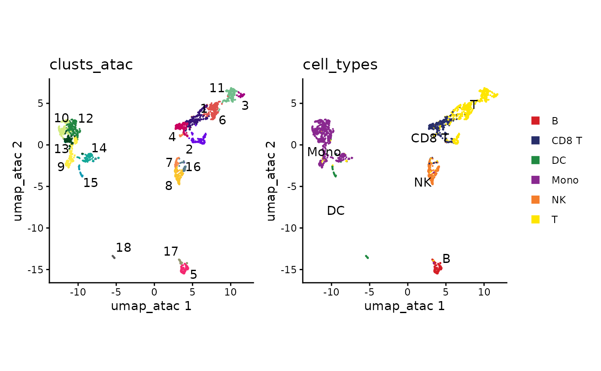
How did we combine the RNA clusters with the ATAC data?
BPCells works based on the order of cells in a matrix or fragment object. Since our ATAC PCA rows are in the same cell order as our RNA clusters, the datasets combine with no additional work.
It does take some effort at the beginning of your analysis to make sure the cell orders are consistent, which is what we did in our cell filtering step. But after ordering the input RNA matrix and ATAC fragments, all downstream calculations should maintain the same cell ordering by default.What if we skip z-score normalization on the LSI matrix?
svd_atac_no_norm <- BPCells::svds(mat_lsi, k=10)
pca_atac_no_norm <- multiply_cols(svd_atac_no_norm$v, svd_atac$d)If we skip normalization, we first observe that we get very high correlation of our first PC to the reads-per-cell in our peak matrix
cor_to_depth <- dplyr::bind_rows(
tibble::tibble(
method="z-score normalize",
abs_cor_to_depth = as.numeric(abs(cor(Matrix::colSums(mat_lsi), pca_atac))),
PC=seq_along(abs_cor_to_depth)
),
tibble::tibble(
method="raw TF-IDF",
abs_cor_to_depth = as.numeric(abs(cor(Matrix::colSums(mat_lsi), pca_atac_no_norm))),
PC=seq_along(abs_cor_to_depth)
)
)
ggplot2::ggplot(cor_to_depth, ggplot2::aes(PC, abs_cor_to_depth, color=method)) +
ggplot2::geom_point() +
ggplot2::theme_bw() +
ggplot2::labs(title="Correlation to of PCs to read depth")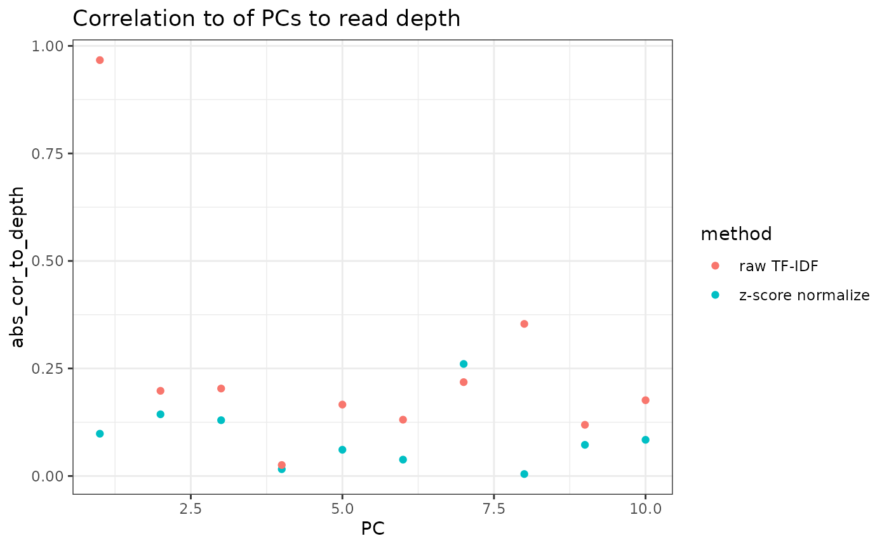
In terms of the actual PCA results, we can see that the cell embeddings have mostly 1-to-1 correspondence across the first 6 PCs, though later PCs start to diverge. The first PC of the raw TF-IDF corresponds mostly to read depth, and the signal is spread out across 2 PCs in the z-score normalized variant.
cor_between_embeddings <- tidyr::expand_grid(
pca_atac_no_norm = seq_len(ncol(pca_atac_no_norm)),
pca_atac=seq_len(ncol(pca_atac))
) %>% mutate(
cor = as.numeric(abs(cor(.env$pca_atac, .env$pca_atac_no_norm)))
)
ggplot2::ggplot(cor_between_embeddings, ggplot2::aes(pca_atac, pca_atac_no_norm, fill=abs(cor))) +
ggplot2::geom_tile() +
ggplot2::geom_text(mapping=ggplot2::aes(label=sprintf("%.2f", cor))) +
ggplot2::scale_x_continuous(breaks=1:10) +
ggplot2::scale_y_continuous(breaks=1:10) +
ggplot2::theme_classic() +
ggplot2::labs(title="Correlation between cell embeddings",
x="z-score normalize PCs",
y ="raw TF-IDF PCs")And if we look at the loading on each peak from the PCA, we see a similar result.
cor_between_loadings <- tidyr::expand_grid(
pca_atac_no_norm = seq_len(ncol(svd_atac_no_norm$u)),
pca_atac=seq_len(ncol(svd_atac$u))
) %>% mutate(
cor = as.numeric(abs(cor(.env$svd_atac$u, .env$svd_atac_no_norm$u)))
)
ggplot2::ggplot(cor_between_loadings, ggplot2::aes(pca_atac, pca_atac_no_norm, fill=abs(cor))) +
ggplot2::geom_tile() +
ggplot2::geom_text(mapping=ggplot2::aes(label=sprintf("%.2f", cor))) +
ggplot2::scale_x_continuous(breaks=1:10) +
ggplot2::scale_y_continuous(breaks=1:10) +
ggplot2::theme_classic() +
ggplot2::labs(title="Correlation between peak loadings",
x="z-score normalize PCs",
y ="raw TF-IDF PCs")Finally, the UMAP generated once we exclude the first PC is fairly similar, though with a notable difference in positioning for some of the dendritic cells
set.seed(12341512)
umap_atac_no_norm <- uwot::umap(pca_atac_no_norm[,-1])
plot_embedding(clusts_atac, umap_atac_no_norm, colors_discrete = discrete_palette("ironMan")) +
ggplot2::guides(color="none") +
plot_embedding(cell_types, umap_atac_no_norm)
Motif footprinting
For motif footprinting, first we need to find all instances of our motifs-of-interest in peaks
suppressPackageStartupMessages({
library(GenomicRanges)
library(Biostrings)
})
peaks_sorted <- dplyr::arrange(peaks, chr, start)
peaks_gr <- dplyr::mutate(peaks_sorted, start = start + 1) %>% as("GenomicRanges")
selected_motifs <- c(
"CEBPA" = "ENSG00000245848_LINE568_CEBPA_D_N4",
"EOMES" = "ENSG00000163508_LINE3544_EOMES_D_N1",
"SPI1" = "ENSG00000066336_LINE1813_SPI1_D_N5",
"CTCF" = "ENSG00000102974_LINE747_CTCF_D_N67"
)
suppressWarnings({
motif_positions <- motifmatchr::matchMotifs(
chromVARmotifs::human_pwms_v2[selected_motifs],
peaks_gr, genome="hg38", out="positions")
})
names(motif_positions) <- names(selected_motifs)
motif_positions## GRangesList object of length 4:
## $CEBPA
## GRanges object with 13983 ranges and 1 metadata column:
## seqnames ranges strand | score
## <Rle> <IRanges> <Rle> | <numeric>
## [1] chr1 1060191-1060200 + | 7.24878
## [2] chr1 1398356-1398365 - | 7.31950
## [3] chr1 1408228-1408237 - | 7.91954
## [4] chr1 1470604-1470613 + | 7.26055
## [5] chr1 1614370-1614379 - | 7.33072
## ... ... ... ... . ...
## [13979] chrX 154247973-154247982 + | 7.91954
## [13980] chrX 154377819-154377828 - | 7.91954
## [13981] chrX 154497506-154497515 + | 8.62478
## [13982] chrX 154734157-154734166 + | 7.33771
## [13983] chrX 155242494-155242503 - | 7.24396
## -------
## seqinfo: 39 sequences from an unspecified genome; no seqlengths
##
## ...
## <3 more elements>Next, we can use these motif positions to plot aggregate accessibility surrounding TF binding sites across our cell types as a proxy for TF activity. Here we’re able to see enrichment of accessibility neighboring the sites of a myeloid transcription factor in our DC and Monocyte cells. Transcription factor binding is (generally) mutually-exclusive with nucleosome occupancy, so the transcription factor is bound it creates accessibility in its flanking regions. The squiggly bit in the center is due to Tn5 insertion bias of the motif itself.
plot_tf_footprint(
frags,
motif_positions$CEBPA,
cell_groups = cell_types,
flank = 250,
smooth = 2
) +
ggplot2::labs(title="CEBPA")
We can also use the patchwork library to show multiple
plots in a grid, highlighting cell-type-specific factors as well as
general factors like CTCF.
footprinting_plots <- list()
for (motif in names(selected_motifs)) {
footprinting_plots[[motif]] <- plot_tf_footprint(
frags,
motif_positions[[motif]],
cell_groups = cell_types,
flank=250,
smooth=2) +
ggplot2::labs(title=motif, color="Cluster")
}
patchwork::wrap_plots(footprinting_plots, guides="collect")Genome accessibility tracks
To plot genome accessibility tracks, we need to select a genome region to view. BPCells provides a helper function to find genome regions centered around a gene.
region <- gene_region(genes, "CD19", extend_bp = 1e5)
region## $chr
## [1] "chr16"
##
## $start
## [1] 28831970
##
## $end
## [1] 29039342For normalizing the tracks, we need to provide the total number of reads for each cell type. This can be substituted for total reads in peaks or other metrics if desired.
We can create the first component of our track plot by plotting the genome tracks themselves. We can see a small peak in the center that is mainly present in B cells (top row), but it is unclear where this sits relative to the B-cell marker CD19.
coverage_plot <- trackplot_coverage(
frags,
region = region,
groups=cell_types,
read_counts,
bins=500
)
coverage_plot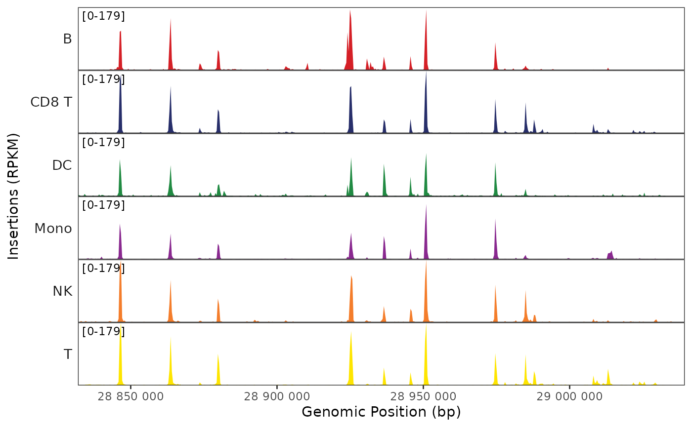
This is much more useful with a gene annotation track added in. For this we’ll get a set of canonical transcripts (one per gene) from Gencode
transcripts <- read_gencode_transcripts("./references", release="42")
head(transcripts)## # A tibble: 6 × 13
## chr source feature start end score strand frame gene_id gene_type
## <chr> <chr> <chr> <dbl> <int> <chr> <chr> <chr> <chr> <chr>
## 1 chr1 HAVANA transcript 65418 71585 . + . ENSG000001… protein_…
## 2 chr1 HAVANA exon 65418 65433 . + . ENSG000001… protein_…
## 3 chr1 HAVANA exon 65519 65573 . + . ENSG000001… protein_…
## 4 chr1 HAVANA exon 69036 71585 . + . ENSG000001… protein_…
## 5 chr1 HAVANA transcript 450739 451678 . - . ENSG000002… protein_…
## 6 chr1 HAVANA exon 450739 451678 . - . ENSG000002… protein_…
## # ℹ 3 more variables: gene_name <chr>, transcript_id <chr>, MANE_Select <lgl>Then we can make an annotation track
gene_plot <- trackplot_gene(transcripts, region)
gene_plot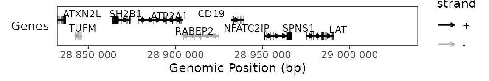
And optionally a scale bar.
scalebar_plot <- trackplot_scalebar(region)
scalebar_plotFinally, we can stack these elements with
trackplot_combine(). Now we see that the small peak is just
upstream of the CD19 gene.
# We list plots in order from top to bottom to combine.
# Notice that our inputs are also just ggplot objects, so we can make modifications
# like removing the color legend from our gene track.
trackplot_combine(
list(
scalebar_plot,
coverage_plot,
gene_plot + ggplot2::guides(color="none")
)
)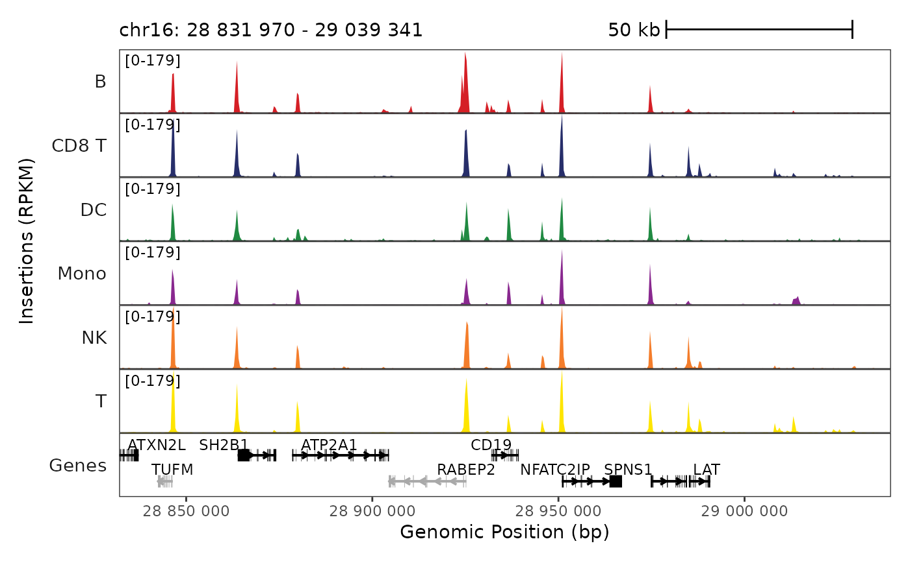